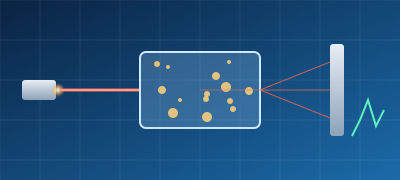
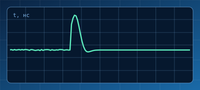
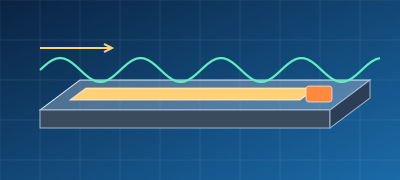
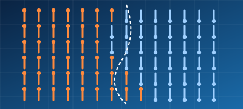
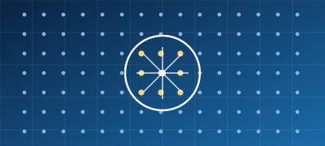
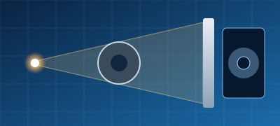
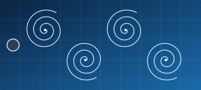

МатериалыMaterials
Выберите направление. Тема уточняется индивидуально с научным руководителем — контакты руководителей указаны в карточках.
Pick a direction. The final topic is agreed individually with a supervisor — supervisors' contacts are given in the cards.



Практикуясь в нашей лаборатории, студенты получат знания в области радиоэлектроники (при желании также микроэлектроники) и газодинамики прямоточных реактивных двигателей.
By working in our laboratory, students will gain knowledge of radio electronics (and microelectronics, if desired) and of the gas dynamics of ramjet engines.

Моделирование магнитно-импульсного соударения пластин; моделирование детонационного напыления.
Simulation of magnetic-pulse collision of plates; simulation of detonation spraying.



Не нашли подходящую тему? Предложите свою — мы поможем сформулировать задачу и найти руководителя.
Can’t find a suitable topic? Propose your own — we will help formulate the problem and find a supervisor.
Напишите секретарю кафедры — подскажем, с чего начать.
Write to the chair secretary — we will help you get started.